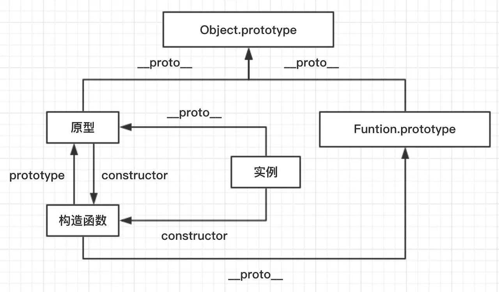
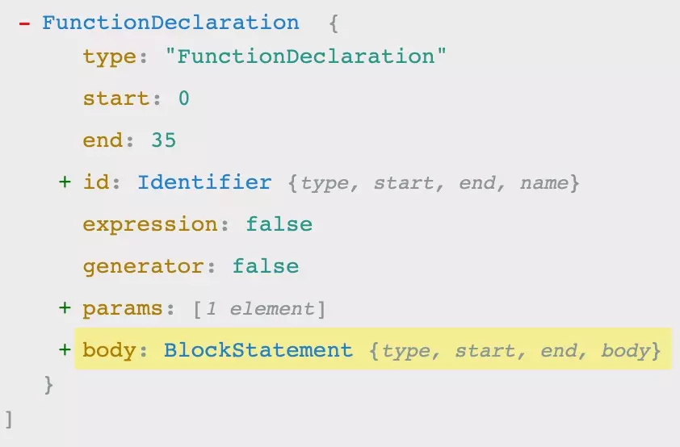
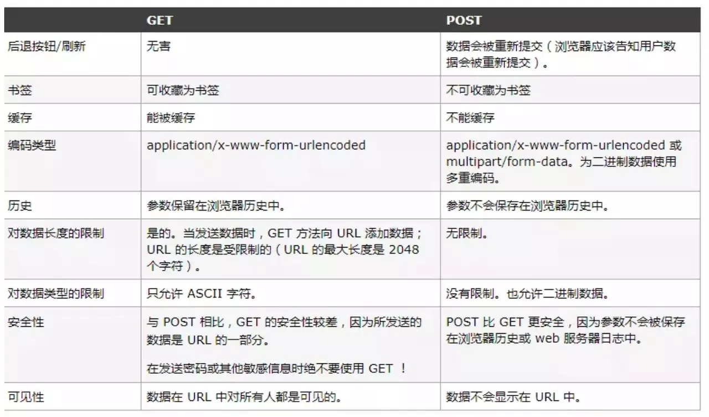
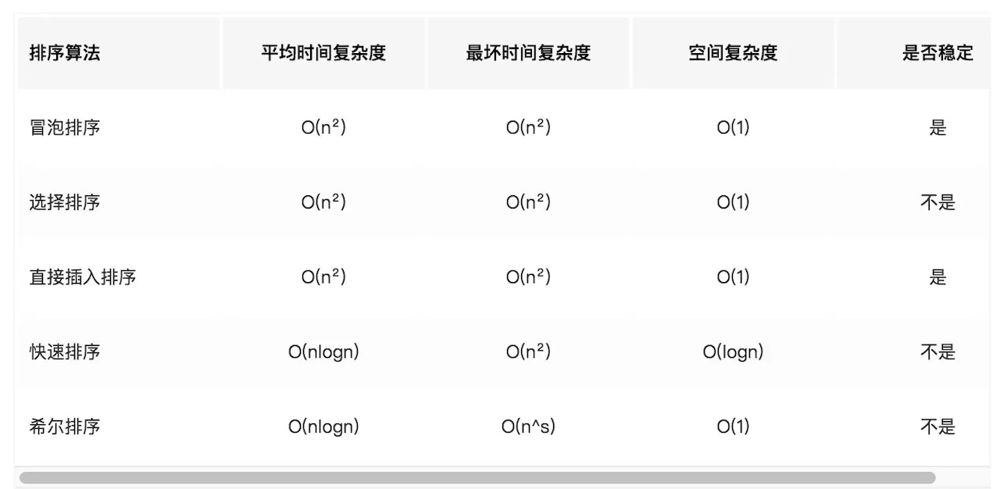
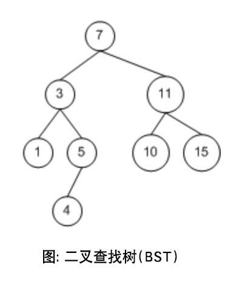

前端面试知识点🙂
CSS
1. 盒模型
页面渲染时，dom 元素所采用的 布局模型。可通过box-sizing进行设置。根据计算宽高的区域可分为：
content-box(W3C 标准盒模型)border-box(IE 盒模型)padding-boxmargin-box(浏览器未实现)
2. BFC
块级格式化上下文，是一个独立的渲染区域，让处于 BFC 内部的元素与外部的元素相互隔离，使内外元素的定位不会相互影响。
IE下为 Layout，可通过 zoom:1 触发
- 触发条件:
- 根元素
position: absolute/fixeddisplay: inline-block / tablefloat元素ovevflow!==visible
- 规则:
- 属于同一个 BFC 的两个相邻 Box 垂直排列
- 属于同一个 BFC 的两个相邻 Box 的 margin 会发生重叠
- BFC 中子元素的 margin box 的左边， 与包含块 (BFC) border box的左边相接触 (子元素 absolute 除外)
- BFC 的区域不会与 float 的元素区域重叠
- 计算 BFC 的高度时，浮动子元素也参与计算
- 文字层不会被浮动层覆盖，环绕于周围
- 应用:
- 阻止
margin重叠 - 可以包含浮动元素 —— 清除内部浮动(清除浮动的原理是两个
div都位于同一个 BFC 区域之中) - 自适应两栏布局
- 可以阻止元素被浮动元素覆盖
- 阻止
3.层叠上下文
元素提升为一个比较特殊的图层，在三维空间中 (z轴) 高出普通元素一等。
- 触发条件
- 根层叠上下文(
html) position- css3属性
flextransformopacityfilterwill-change-webkit-overflow-scrolling
- 根层叠上下文(
- 层叠等级：层叠上下文在z轴上的排序
- 在同一层叠上下文中，层叠等级才有意义
z-index的优先级最高

4. 居中布局
- 水平居中
- 行内元素:
text-align: center - 块级元素:
margin: 0 auto absolute + transformflex + justify-content: center
- 行内元素:
- 垂直居中
line-height: heightabsolute + transformflex + align-items: centertable
- 水平垂直居中
absolute + transformflex + justify-content + align-items
5. 选择器优先级
!important> 行内样式 >#id>.class>tag> * > 继承 > 默认- 选择器 从右往左 解析
6.去除浮动影响，防止父级高度塌陷
- 通过增加尾元素清除浮动
:after / <br> : clear: both
- 创建父级 BFC
- 父级设置高度
7.link 与 @import 的区别
link功能较多，可以定义 RSS，定义 Rel 等作用，而@import只能用于加载 css- 当解析到
link时，页面会同步加载所引的 css，而@import所引用的 css 会等到页面加载完才被加载 @import需要 IE5 以上才能使用link可以使用 js 动态引入，@import不行
8. CSS预处理器(Sass/Less/Postcss)
CSS预处理器的原理: 是将类 CSS 语言通过 Webpack 编译 转成浏览器可读的真正 CSS。在这层编译之上，便可以赋予 CSS 更多更强大的功能，常用功能:
- 嵌套
- 变量
- 循环语句
- 条件语句
- 自动前缀
- 单位转换
- mixin复用
面试中一般不会重点考察该点，一般介绍下自己在实战项目中的经验即可~
9.CSS动画
transition: 过渡动画transition-property: 属性transition-duration: 间隔transition-timing-function: 曲线transition-delay: 延迟- 常用钩子:
transitionend
animation / keyframesanimation-name: 动画名称，对应@keyframesanimation-duration: 间隔animation-timing-function: 曲线animation-delay: 延迟animation-iteration-count: 次数
infinite: 循环动画
animation-direction: 方向
alternate: 反向播放
animation-fill-mode: 静止模式
forwards: 停止时，保留最后一帧backwards: 停止时，回到第一帧both: 同时运用forwards / backwards
常用钩子:
animationend
动画属性: 尽量使用动画属性进行动画，能拥有较好的性能表现
translatescalerotateskewopacitycolor
经验
通常，CSS 并不是重点的考察领域，但这其实是由于现在国内业界对 CSS 的专注不够导致的，真正精通并专注于 CSS 的团队和人才并不多。因此如果能在 CSS 领域有自己的见解和经验，反而会为相当的加分和脱颖而出。
JavaScript
1. 原型 / 构造函数 / 实例
- 原型
(prototype): 一个简单的对象，用于实现对象的 属性继承。可以简单的理解成对象的爹。在 Firefox 和 Chrome 中，每个JavaScript对象中都包含一个__proto__(非标准)的属性指向它爹(该对象的原型)，可obj.__proto__进行访问。 - 构造函数: 可以通过
new来 新建一个对象 的函数。 - 实例: 通过构造函数和
new创建出来的对象，便是实例。 实例通过__proto__指向原型，通过constructor指向构造函数。
说了一大堆，大家可能有点懵逼，这里来举个栗子，以Object为例，我们常用的Object便是一个构造函数，因此我们可以通过它构建实例。
1 | // 实例 |
则此时， 实例为instance, 构造函数为Object，我们知道，构造函数拥有一个prototype的属性指向原型，因此原型为:
1 | // 原型 |
这里我们可以来看出三者的关系:
1 | 实例.__proto__ === 原型 |
放大来看，我画了张图供大家彻底理解:

2.原型链：
原型链是由原型对象组成，每个对象都有 __proto__ 属性，指向了创建该对象的构造函数的原型，__proto__ 将对象连接起来组成了原型链。是一个用来实现继承和共享属性的有限的对象链。
- 属性查找机制: 当查找对象的属性时，如果实例对象自身不存在该属性，则沿着原型链往上一级查找，找到时则输出，不存在时，则继续沿着原型链往上一级查找，直至最顶级的原型对象
Object.prototype，如还是没找到，则输出undefined； - 属性修改机制: 只会修改实例对象本身的属性，如果不存在，则进行添加该属性，如果需要修改原型的属性时，则可以用:
b.prototype.x = 2；但是这样会造成所有继承于该对象的实例的属性发生改变。
3. 执行上下文(EC)
执行上下文可以简单理解为一个对象:
- 它包含三个部分:
- 变量对象(VO)
- 作用域链(词法作用域)
this指向
- 它的类型:
- 全局执行上下文
- 函数执行上下文
eval执行上下文
- 代码执行过程:
- 创建 全局上下文 (global EC)
- 全局执行上下文 (caller) 逐行 自上而下 执行。遇到函数时，函数执行上下文 (callee) 被
push到执行栈顶层 - 函数执行上下文被激活，成为 active EC, 开始执行函数中的代码，caller 被挂起
- 函数执行完后，callee 被
pop移除出执行栈，控制权交还全局上下文 (caller)，继续执行
2.变量对象
变量对象，是执行上下文中的一部分，可以抽象为一种 数据作用域，其实也可以理解为就是一个简单的对象，它存储着该执行上下文中的所有 变量和函数声明(不包含函数表达式)。
活动对象 (AO): 当变量对象所处的上下文为 active EC 时，称为活动对象。
3. 作用域
执行上下文中还包含作用域链。理解作用域之前，先介绍下作用域。作用域其实可理解为该上下文中声明的 变量和声明的作用范围。可分为 块级作用域 和 函数作用域
特性:
- 声明提前: 一个声明在函数体内都是可见的, 函数优先于变量
- 非匿名自执行函数，函数变量为 只读 状态，无法修改
1 | let foo = function() { console.log(1) }; |
4.作用域链
我们知道，我们可以在执行上下文中访问到父级甚至全局的变量，这便是作用域链的功劳。作用域链可以理解为一组对象列表，包含 父级和自身的变量对象，因此我们便能通过作用域链访问到父级里声明的变量或者函数。
- 由两部分组成:
[[scope]]属性: 指向父级变量对象和作用域链，也就是包含了父级的[[scope]]和AO- AO: 自身活动对象
如此 [[scopr]]包含[[scope]]，便自上而下形成一条 链式作用域。
5. 闭包
闭包属于一种特殊的作用域，称为 静态作用域。它的定义可以理解为: 父函数被销毁 的情况下，返回出的子函数的[[scope]]中仍然保留着父级的单变量对象和作用域链，因此可以继续访问到父级的变量对象，这样的函数称为闭包。
- 闭包会产生一个很经典的问题:
- 多个子函数的
[[scope]]都是同时指向父级，是完全共享的。因此当父级的变量对象被修改时，所有子函数都受到影响。
- 多个子函数的
- 解决:
- 变量可以通过 函数参数的形式 传入，避免使用默认的
[[scope]]向上查找 - 使用
setTimeout包裹，通过第三个参数传入 - 使用 块级作用域，让变量成为自己上下文的属性，避免共享
- 变量可以通过 函数参数的形式 传入，避免使用默认的
6. script 引入方式：
- html 静态
<script>引入 - js 动态插入
<script> <script defer>: 延迟加载，元素解析完成后执行<script async>: 异步加载，但执行时会阻塞元素渲染
7. 对象的拷贝
浅拷贝: 以赋值的形式拷贝引用对象，仍指向同一个地址，修改时原对象也会受到影响
Object.assign- 展开运算符(…)
深拷贝: 完全拷贝一个新对象，修改时原对象不再受到任何影响
JSON.parse(JSON.stringify(obj)): 性能最快
- 具有循环引用的对象时，报错
当值为函数、
undefined、或symbol时，无法拷贝- 递归进行逐一赋值
8. new运算符的执行过程
- 新生成一个对象
- 链接到原型:
obj.__proto__ = Con.prototype - 绑定this:
apply - 返回新对象(如果构造函数有自己 retrun 时，则返回该值)
9. instanceof原理
能在实例的 原型对象链 中找到该构造函数的prototype属性所指向的 原型对象，就返回true。即:
1 | // __proto__: 代表原型对象链 |
10. 代码的复用
当你发现任何代码开始写第二遍时，就要开始考虑如何复用。一般有以下的方式:
- 函数封装
- 继承
- 复制
extend - 混入
mixin - 借用
apply/call
11. 继承
在 JS 中，继承通常指的便是 原型链继承，也就是通过指定原型，并可以通过原型链继承原型上的属性或者方法。
- 最优化: 圣杯模式
1 | var inherit = (function(c,p){ |
- 使用 ES6 的语法糖
class / extends
12. 类型转换
大家都知道 JS 中在使用运算符号或者对比符时，会自带隐式转换，规则如下:
- -、*、/、% ：一律转换成数值后计算
- +：
- 数字 + 字符串 = 字符串， 运算顺序是从左到右
- 数字 + 对象， 优先调用对象的
valueOf->toString - 数字 +
boolean/null-> 数字 - 数字 +
undefined->NaN
[1].toString() === '1'{}.toString() === '[object object]'NaN!==NaN、+undefined 为 NaN
13. 类型判断
判断 Target 的类型，单单用 typeof 并无法完全满足，这其实并不是 bug，本质原因是 JS 的万物皆对象的理论。因此要真正完美判断时，我们需要区分对待:
- 基本类型(
null): 使用String(null) - 基本类型(
string / number / boolean / undefined) +function: 直接使用typeof即可 - 其余引用类型(
Array / Date / RegExp Error): 调用toString后根据[object XXX]进行判断
很稳的判断封装:
1 | let class2type = {} |
14. 模块
模块化开发在现代开发中已是必不可少的一部分，它大大提高了项目的可维护、可拓展和可协作性。通常，我们 在浏览器中使用 ES6 的模块化支持，在 Node 中使用 commonjs 的模块化支持。
- 分类:
- es6:
import / export - commonjs:
require / module.exports / exports - amd:
require / defined
- es6:
require与import的区别require支持 动态导入，import不支持，正在提案 (babel 下可支持)require是 同步 导入，import属于 异步 导入require是 值拷贝，导出值变化不会影响导入值；import指向 内存地址，导入值会随导出值而变化
15. 防抖与节流
防抖与节流函数是一种最常用的 高频触发优化方式，能对性能有较大的帮助。
- 防抖 (debounce): 将多次高频操作优化为只在最后一次执行，通常使用的场景是：用户输入，只需再输入完成后做一次输入校验即可。
1 | function debounce(fn, wait, immediate) { |
- 节流(throttle): 每隔一段时间后执行一次，也就是降低频率，将高频操作优化成低频操作，通常使用场景: 滚动条事件 或者 resize 事件，通常每隔 100~500 ms执行一次即可。
1 | function throttle(fn, wait, immediate) { |
16. 函数执行改变this
由于 JS 的设计原理: 在函数中，可以引用运行环境中的变量。因此就需要一个机制来让我们可以在函数体内部获取当前的运行环境，这便是this。
因此要明白 this 指向，其实就是要搞清楚 函数的运行环境，说人话就是，谁调用了函数。例如:
obj.fn()，便是obj调用了函数，既函数中的this === objfn()，这里可以看成window.fn()，因此this === window
但这种机制并不完全能满足我们的业务需求，因此提供了三种方式可以手动修改 this 的指向:
call: fn.call(target, 1, 2)apply: fn.apply(target, [1, 2])bind: fn.bind(target)(1,2)
17. ES6/ES7
由于 Babel 的强大和普及，现在 ES6/ES7 基本上已经是现代化开发的必备了。通过新的语法糖，能让代码整体更为简洁和易读。
声明
let / const: 块级作用域、不存在变量提升、暂时性死区、不允许重复声明const: 声明常量，无法修改
解构赋值
class / extend: 类声明与继承Set / Map: 新的数据结构异步解决方案:
Promise的使用与实现generator:yield: 暂停代码next(): 继续执行代码
1
2
3
4
5
6
7
8
9
10
11
12
13
14
15function* helloWorld() {
yield 'hello';
yield 'world';
return 'ending';
}
const generator = helloWorld();
generator.next() // { value: 'hello', done: false }
generator.next() // { value: 'world', done: false }
generator.next() // { value: 'ending', done: true }
generator.next() // { value: undefined, done: true }await / async: 是generator的语法糖， babel中是基于promise实现。
1
2
3
4
5
6
7async function getUserByAsync(){
let user = await fetchUser();
return user;
}
const user = await getUserByAsync()
console.log(user)
18. AST
抽象语法树 (Abstract Syntax Tree)，是将代码逐字母解析成 树状对象 的形式。这是语言之间的转换、代码语法检查，代码风格检查，代码格式化，代码高亮，代码错误提示，代码自动补全等等的基础。例如:
1 | function square(n){ |
通过解析转化成的AST如下图:

19. babel编译原理
- babylon 将 ES6/ES7 代码解析成 AST
- babel-traverse 对 AST 进行遍历转译，得到新的 AST
- 新 AST 通过 babel-generator 转换成 ES5
20. 函数柯里化
在一个函数中，首先填充几个参数，然后再返回一个新的函数的技术，称为函数的柯里化。通常可用于在不侵入函数的前提下，为函数 预置通用参数，供多次重复调用。
1 | const add = function add(x) { |
21. 数组(array)
map: 遍历数组，返回回调返回值组成的新数组forEach: 无法break，可以用try/catch中throw new Error来停止filter: 过滤some: 有一项返回true，则整体为trueevery: 有一项返回false，则整体为falsejoin: 通过指定连接符生成字符串push / pop: 末尾推入和弹出，改变原数组， 返回推入/弹出项unshift / shift: 头部推入和弹出，改变原数组，返回操作项sort(fn) / reverse: 排序与反转，改变原数组concat: 连接数组，不影响原数组， 浅拷贝slice(start, end): 返回截断后的新数组，不改变原数组splice(start, number, value...): 返回删除元素组成的数组，value 为插入项，改变原数组indexOf / lastIndexOf(value, fromIndex): 查找数组项，返回对应的下标reduce / reduceRight(fn(prev, cur)， defaultPrev): 两两执行，prev 为上次化简函数的return值，cur 为当前值(从第二项开始)- 数组乱序：
1 | var arr = [1, 2, 3, 4, 5, 6, 7, 8, 9, 10]; |
- 数组拆解: flat: [1,[2,3]] --> [1, 2, 3]
1 | Array.prototype.flat = function() { |
浏览器
1. 跨标签页通讯
不同标签页间的通讯，本质原理就是去运用一些可以 共享的中间介质，因此比较常用的有以下方法:
- 通过父页面
window.open()和子页面postMessage- 异步下，通过
window.open('about: blank')和tab.location.href = '*'
- 异步下，通过
- 设置同域下共享的
localStorage与监听window.onstorage- 重复写入相同的值无法触发
- 会受到浏览器隐身模式等的限制
- 设置共享
cookie与不断轮询脏检查(setInterval) - 借助服务端或者中间层实现
2. 浏览器架构
- 用户界面
- 主进程
- 内核
- 渲染引擎
- JS 引擎
- 执行栈
- 事件触发线程
- 消息队列
- 微任务
- 宏任务
- 消息队列
- 网络异步线程
- 定时器线程
3. 浏览器下事件循环(Event Loop)
事件循环是指: 执行一个宏任务，然后执行清空微任务列表，循环再执行宏任务，再清微任务列表
- 微任务
microtask(jobs):promise / ajax / Object.observe(该方法已废弃) - 宏任务
macrotask(task):setTimout / script / IO / UI Rendering
4. 从输入 url 到展示的过程
- DNS 解析
- TCP 三次握手
- 发送请求，分析 url，设置请求报文(头，主体)
- 服务器返回请求的文件 (html)
- 浏览器渲染
- HTML parser --> DOM Tree
- 标记化算法，进行元素状态的标记
- dom 树构建
- CSS parser --> Style Tree
- 解析 css 代码，生成样式树
- attachment --> Render Tree
- 结合 dom树 与 style树，生成渲染树
- layout: 布局
- GPU painting: 像素绘制页面
- HTML parser --> DOM Tree
5. 重绘与回流
当元素的样式发生变化时，浏览器需要触发更新，重新绘制元素。这个过程中，有两种类型的操作，即重绘与回流。
- 重绘(repaint): 当元素样式的改变不影响布局时，浏览器将使用重绘对元素进行更新，此时由于只需要UI层面的重新像素绘制，因此 损耗较少
- 回流(reflow): 当元素的尺寸、结构或触发某些属性时，浏览器会重新渲染页面，称为回流。此时，浏览器需要重新经过计算，计算后还需要重新页面布局，因此是较重的操作。会触发回流的操作:
- 页面初次渲染
- 浏览器窗口大小改变
- 元素尺寸、位置、内容发生改变
- 元素字体大小变化
- 添加或者删除可见的 dom 元素
- 激活 CSS 伪类（例如：:hover）
- 查询某些属性或调用某些方法
- clientWidth、clientHeight、clientTop、clientLeft
- offsetWidth、offsetHeight、offsetTop、offsetLeft
- scrollWidth、scrollHeight、scrollTop、scrollLeft
- getComputedStyle()
- getBoundingClientRect()
- scrollTo()
回流必定触发重绘，重绘不一定触发回流。重绘的开销较小，回流的代价较高。
最佳实践:
- css
- 避免使用
table布局 - 将动画效果应用到
position属性为absolute或fixed的元素上
- 避免使用
- javascript
- 避免频繁操作样式，可汇总后统一 一次修改
- 尽量使用
class进行样式修改 - 减少
dom的增删次数，可使用 字符串 或者documentFragment一次性插入 - 极限优化时，修改样式可将其
display: none后修改 - 避免多次触发上面提到的那些会触发回流的方法，可以的话尽量用 变量存住
6. 存储
我们经常需要对业务中的一些数据进行存储，通常可以分为 短暂性存储 和 持久性储存。
短暂性的时候，我们只需要将数据存在内存中，只在运行时可用
持久性存储，可以分为 浏览器端 与 服务器端
浏览器:
cookie: 通常用于存储用户身份，登录状态等
- http 中自动携带， 体积上限为 4K， 可自行设置过期时间
localStorage / sessionStorage: 长久储存/窗口关闭删除， 体积限制为 4~5MindexDB
服务器:
- 分布式缓存 redis
数据库
7. Web Worker
现代浏览器为JavaScript创造的 多线程环境。可以新建并将部分任务分配到worker线程并行运行，两个线程可 独立运行，互不干扰，可通过自带的 消息机制 相互通信。
基本用法:
1 | // 创建 worker |
限制:
- 同源限制
- 无法使用
document/window/alert/confirm - 无法加载本地资源
8. V8垃圾回收机制
垃圾回收: 将内存中不再使用的数据进行清理，释放出内存空间。V8 将内存分成 新生代空间 和 老生代空间。
新生代空间
: 用于存活较短的对象
- 又分成两个空间: from 空间 与 to 空间
- Scavenge GC算法: 当 from 空间被占满时，启动 GC 算法
- 存活的对象从 from space 转移到 to space
- 清空 from space
- from space 与 to space 互换
- 完成一次新生代GC
老生代空间
: 用于存活时间较长的对象
从 新生代空间 转移到 老生代空间 的条件
- 经历过一次以上 Scavenge GC 的对象
- 当 to space 体积超过25%
标记清除算法
: 标记存活的对象，未被标记的则被释放
- 增量标记: 小模块标记，在代码执行间隙执，GC 会影响性能
- 并发标记(最新技术): 不阻塞 js 执行
压缩算法: 将内存中清除后导致的碎片化对象往内存堆的一端移动，解决 内存的碎片化
9. 内存泄露
- 意外的全局变量: 无法被回收
- 定时器: 未被正确关闭，导致所引用的外部变量无法被释放
- 事件监听: 没有正确销毁 (低版本浏览器可能出现)
- 闭包: 会导致父级中的变量无法被释放
- dom 引用: dom 元素被删除时，内存中的引用未被正确清空
可用 chrome 中的 timeline 进行内存标记，可视化查看内存的变化情况，找出异常点。
服务端与网络
1. http/https 协议
- 1.0 协议缺陷:
- 无法复用链接，完成即断开，重新慢启动和 TCP 3次握手
- head of line blocking: 线头阻塞，导致请求之间互相影响
- 1.1 改进:
- 长连接(默认 keep-alive)，复用
- host 字段指定对应的虚拟站点
- 新增功能:
- 断点续传
- 身份认证
- 状态管理
- cache 缓存
- Cache-Control
- Expires
- Last-Modified
- Etag
- 2.0:
- 多路复用
- 二进制分帧层: 应用层和传输层之间
- 首部压缩
- 服务端推送
- https: 较为安全的网络传输协议
- 证书(公钥)
- SSL 加密
- 端口 443
- TCP:
- 三次握手
- 四次挥手
- 滑动窗口: 流量控制
- 拥塞处理
- 慢开始
- 拥塞避免
- 快速重传
- 快速恢复
- 缓存策略: 可分为 强缓存 和 协商缓存
- Cache-Control/Expires: 浏览器判断缓存是否过期，未过期时，直接使用强缓存，Cache-Control的 max-age 优先级高于 Expires
- 当缓存已经过期时，使用协商缓存
- 唯一标识方案: Etag(response 携带) & If-None-Match(request携带，上一次返回的 Etag): 服务器判断资源是否被修改，
- 最后一次修改时间: Last-Modified(response) & If-Modified-Since (request，上一次返回的Last-Modified)
- 如果一致，则直接返回 304 通知浏览器使用缓存
- 如不一致，则服务端返回新的资源
- Last-Modified 缺点：
- 周期性修改，但内容未变时，会导致缓存失效
- 最小粒度只到 s， s 以内的改动无法检测到
- Etag 的优先级高于 Last-Modified
2. 常见状态码
- 1xx: 接受，继续处理
- 200: 成功，并返回数据
- 201: 已创建
- 202: 已接受
- 203: 成为，但未授权
- 204: 成功，无内容
- 205: 成功，重置内容
- 206: 成功，部分内容
- 301: 永久移动，重定向
- 302: 临时移动，可使用原有URI
- 304: 资源未修改，可使用缓存
- 305: 需代理访问
- 400: 请求语法错误
- 401: 要求身份认证
- 403: 拒绝请求
- 404: 资源不存在
- 500: 服务器错误
3. get / post
- get: 缓存、请求长度受限、会被历史保存记录
- 无副作用(不修改资源)，幂等(请求次数与资源无关)的场景
- post: 安全、大数据、更多编码类型
两者详细对比如下图:

4. Websocket
Websocket 是一个 持久化的协议， 基于 http ， 服务端可以 主动 push
- 兼容：
- FLASH Socket
- 长轮询： 定时发送 ajax
- long poll： 发送 --> 有消息时再 response
new WebSocket(url)ws.onerror = fnws.onclose = fnws.onopen = fnws.onmessage = fnws.send()
5. TCP三次握手
建立连接前，客户端和服务端需要通过握手来确认对方:
- 客户端发送 syn(同步序列编号) 请求，进入 syn_send 状态，等待确认
- 服务端接收并确认 syn 包后发送 syn+ack 包，进入 syn_recv 状态
- 客户端接收 syn+ack 包后，发送 ack 包，双方进入 established 状态
6. TCP四次挥手
- 客户端 – FIN --> 服务端， FIN—WAIT
- 服务端 – ACK --> 客户端， CLOSE-WAIT
- 服务端 – ACK,FIN --> 客户端， LAST-ACK
- 客户端 – ACK --> 服务端，CLOSED
7. Node 的 Event Loop: 6个阶段
timer 阶段: 执行到期的
setTimeout / setInterval队列回调I/O 阶段: 执行上轮循环残流的
callbackidle, prepare
poll: 等待回调
执行回调
执行定时器
如有到期的
setTimeout / setInterval， 则返回 timer 阶段如有
setImmediate，则前往 check 阶段
check
- 执行
setImmediate
- 执行
close callbacks
跨域
- JSONP: 利用
<script>标签不受跨域限制的特点，缺点是只能支持 get 请求
1 | function jsonp(url, jsonpCallback, success) { |
- 设置 CORS: Access-Control-Allow-Origin：*
- postMessage
安全
- XSS攻击: 注入恶意代码
- cookie 设置 httpOnly
- 转义页面上的输入内容和输出内容
- CSRF: 跨站请求伪造，防护:
- get 不修改数据
- 不被第三方网站访问到用户的 cookie
- 设置白名单，不被第三方网站请求
- 请求校验
框架：Vue
1. nextTick
在下次dom更新循环结束之后执行延迟回调，可用于获取更新后的dom状态
- 新版本中默认是
microtasks,v-on中会使用macrotasks macrotasks任务的实现:setImmediate / MessageChannel / setTimeout
2. 生命周期
_init_initLifecycle/Event，往vm上挂载各种属性callHook: beforeCreated: 实例刚创建initInjection/initState: 初始化注入和 data 响应性created: 创建完成，属性已经绑定， 但还未生成真实dom进行元素的挂载：
$el / vm.$mount()是否有template: 解析成render function
*.vue
文件:vue-loader会将编译成render function`beforeMount: 模板编译/挂载之前执行
render function，生成真实的dom，并替换到dom tree中mounted: 组件已挂载
update:执行
diff算法，比对改变是否需要触发UI更新flushScheduleQueue
watcher.before: 触发beforeUpdate钩子 -watcher.run(): 执行watcher中的notify，通知所有依赖项更新UI
触发
updated钩子: 组件已更新actived / deactivated(keep-alive): 不销毁，缓存，组件激活与失活destroy:beforeDestroy: 销毁开始- 销毁自身且递归销毁子组件以及事件监听
remove(): 删除节点watcher.teardown(): 清空依赖vm.$off(): 解绑监听
destroyed: 完成后触发钩子
上面是vue的声明周期的简单梳理，接下来我们直接以代码的形式来完成vue的初始化
1 | new Vue({}) |
3. 数据响应(数据劫持)
看完生命周期后，里面的watcher等内容其实是数据响应中的一部分。数据响应的实现由两部分构成: 观察者( watcher ) 和 依赖收集器( Dep )，其核心是 defineProperty这个方法，它可以 重写属性的 get 与 set 方法，从而完成监听数据的改变。
Observe (观察者)观察 props 与 state
- 遍历 props 与 state，对每个属性创建独立的监听器( watcher )
使用
defineProperty重写每个属性的 get/set(
defineReactive）
get
: 收集依赖
- Dep.depend()
watcher.addDep()
set
: 派发更新
Dep.notify()watcher.update()queenWatcher()nextTick
flushScheduleQueuewatcher.run()updateComponent()
大家可以先看下面的数据相应的代码实现后，理解后就比较容易看懂上面的简单脉络了。
1 | let data = {a: 1} |
4. virtual dom 原理实现
创建 dom 树
树的
diff，同层对比，输出patchs(listDiff/diffChildren/diffProps)没有新的节点，返回
新的节点
tagName与key不变， 对比props，继续递归遍历子树- 对比属性(对比新旧属性列表):
旧属性是否存在与新属性列表中
- 都存在的是否有变化
是否出现旧列表中没有的新属性
tagName和key值变化了，则直接替换成新节点
渲染差异
- 遍历
patchs， 把需要更改的节点取出来 - 局部更新
dom
- 遍历
1 | // diff算法的实现 |
5. Proxy 相比于 defineProperty 的优势
- 数组变化也能监听到
- 不需要深度遍历监听
1 | let data = { a: 1 } |
6. vue-router
mode
hashhistory
跳转
this.$router.push()<router-link to=""></router-link>
占位
<router-view></router-view>
7. vuex
state: 状态中心mutations: 更改状态actions: 异步更改状态getters: 获取状态modules: 将state分成多个modules，便于管理
算法
其实算法方面在前端的实际项目中涉及得并不多，但还是需要精通一些基础性的算法，一些公司还是会有这方面的需求和考核，建议大家还是需要稍微准备下，这属于加分题。
1. 五大算法
- 贪心算法: 局部最优解法
- 分治算法: 分成多个小模块，与原问题性质相同
- 动态规划: 每个状态都是过去历史的一个总结
- 回溯法: 发现原先选择不优时，退回重新选择
- 分支限界法
2. 基础排序算法
- 冒泡排序: 两两比较
1 | function bubleSort(arr) { |
- 选择排序: 遍历自身以后的元素，最小的元素跟自己调换位置
1 | function selectSort(arr) { |
- 插入排序: 即将元素插入到已排序好的数组中
1 | function insertSort(arr) { |
3. 高级排序算法
- 快速排序
- 选择基准值(base)，原数组长度减一(基准值)，使用 splice
- 循环原数组，小的放左边(left数组)，大的放右边(right数组);
- concat(left, base, right)
- 递归继续排序 left 与 right
1 | function quickSort(arr) { |
- 希尔排序：不定步数的插入排序，插入排序
- 口诀: 插冒归基稳定，快选堆希不稳定

稳定性： 同大小情况下是否可能会被交换位置, 虚拟dom的diff，不稳定性会导致重新渲染；
4. 递归运用(斐波那契数列)： 爬楼梯问题
初始在第一级，到第一级有1种方法(s(1) = 1)，到第二级也只有一种方法(s(2) = 1)， 第三级(s(3) = s(1) + s(2))
1 | function cStairs(n) { |
5. 数据树
- 二叉树: 最多只有两个子节点
- 完全二叉树
- 满二叉树
- 深度为 h, 有 n 个节点，且满足 n = 2^h - 1
- 二叉查找树: 是一种特殊的二叉树，能有效地提高查找效率
- 小值在左，大值在右
- 节点 n 的所有左子树值小于 n，所有右子树值大于 n

- 遍历节点
- 前序遍历
- 根节点
- 访问左子节点，回到 1
- 访问右子节点，回到 1
- 中序遍历
- 先访问到最左的子节点
- 访问该节点的父节点
- 访问该父节点的右子节点， 回到 1
- 后序遍历
- 先访问到最左的子节点
- 访问相邻的右节点
- 访问父节点， 回到 1
- 前序遍历
- 插入与删除节点
6. 天平找次品
有n个硬币，其中1个为假币，假币重量较轻，你有一把天平，请问，至少需要称多少次能保证一定找到假币?
三等分算法:
- 将硬币分成3组，随便取其中两组天平称量
平衡，假币在未上称的一组，取其回到 1 继续循环
- 不平衡，假币在天平上较轻的一组， 取其回到 1 继续循环